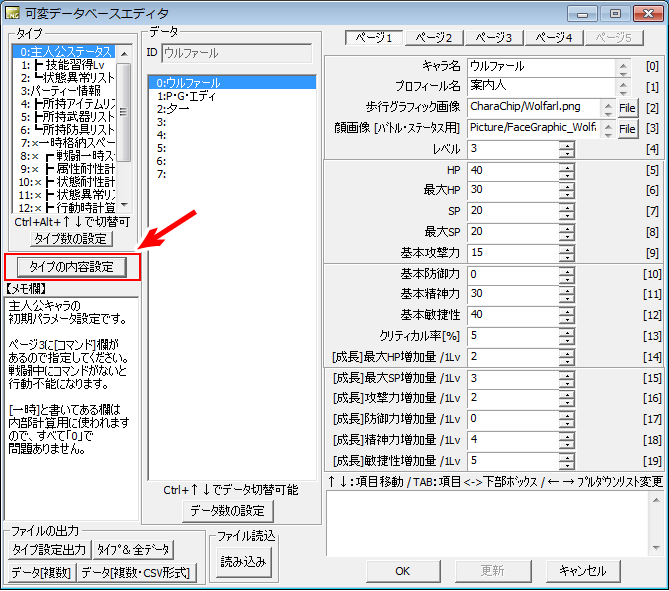
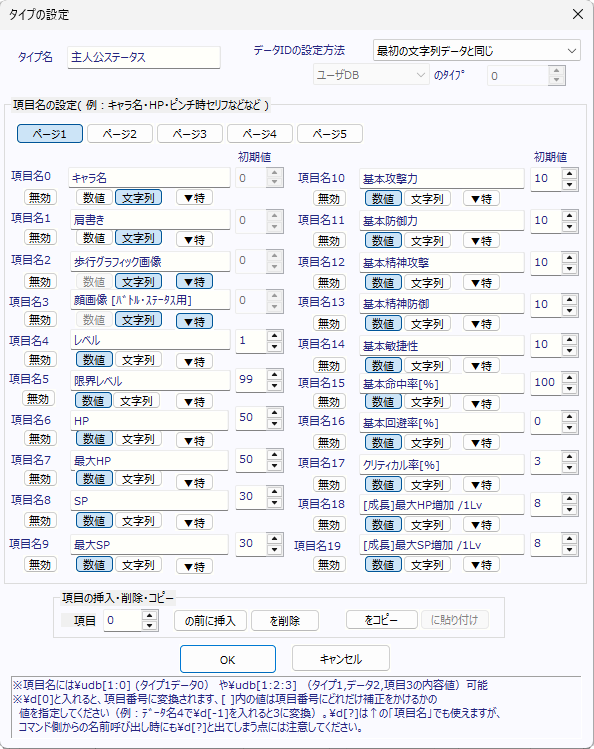
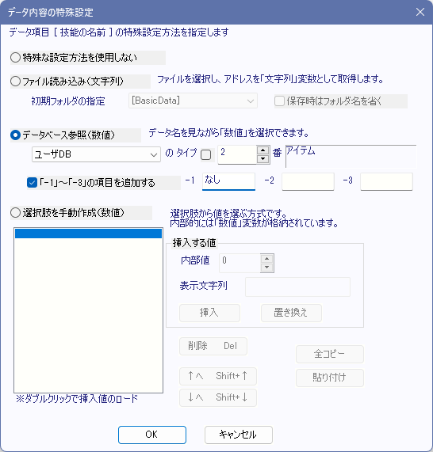

データベース 【タイプの内容設定】
データベースエディット中、以下のボタンを押すことで、選択中のタイプの内容設定を行うことができます。

上記のボタンを押すと、以下のようなウィンドウが表示されます。

【各部の説明】
・タイプ名 … タイプの名前を指定します。
・データIDの設定方法 … データのIDをどう設定するか指定できます。IDの指定方法には以下の項目があります。
- 手動で設定 … 自分でデータIDを設定します。
- 最初の文字列データと同じ … 一番目の文字列データをデータIDとします。アイテム名やキャラ名が最初に来る場合はこれがよいでしょう。
- 1つ前のタイプのデータIDと同じ … 一つ前のタイプのデータIDを、このタイプのデータIDとします。
- 指定DBの指定タイプから … 指定したDBの指定タイプのデータIDを、このタイプのデータIDとします。
・項目名0～99 … 各項目名を指定します。\udb[A:B](ユーザーDBタイプAのデータBのデータID)や\cdb[A:B:C](可変DBタイプAのデータBの項目C)、\d[X](内容番号+1※)などの特殊文字が使えます。
※例えば、データ名12の入力欄に\d[4]と書くと16になります。\udb[3:\v[4]:\d[0]] という風に入れても機能します。
・初期値 … 変数格納時のみ有効、初期値を設定できます。初期値が設定されるのは、データを削除・切り取りしたときや、データ数を増やした場合です。
・「無効 / 数値 / 文字列」ボタン
各項目に格納するデータを「数値」か「文字列」で指定します。無効にするとそこから先のデータは表示されなくなります。
・「▼特」ボタン
特殊な入力を使用する場合に押します、これで設定を行うと、「数値」か「文字列」かが自動で設定されます。詳細は以下を参照してください。
【「▼特」特殊入力設定について】
「▼特」ボタンを押すと以下のようなウィンドウが表示されます。

特殊設定では、以下の4種類の中から設定方法を選択できます。（）内の値は格納されるデータのタイプを表しています。
・特殊な設定方法を使用しない
特殊な設定方法を使用しません、初期状態ではこれに設定されています。この場合は「変数/文字列」のタイプ設定が自由にできます。
・ファイル読み込み（文字列）
ファイル選択ウィンドウを表示し、選択されたファイルアドレスを文字列として格納できます。データベースの項目に画像アドレスを設定する際などに有用です。
「保存時はフォルダ名を省く」をオンにしていると、選択時にフォルダ名だけ省き、ファイル名だけをデータ枠に格納します。
また、この設定になっている場合のみ、項目にファイルをドラッグ＆ドロップすると、
そのファイルアドレス（「～\Data」以後のパス名）を入力できます。
たとえばファイル「C:\Woditor\Data\Graphic\AAA.png」をドラッグしてテキストボックスにドロップした場合、
そのテキストボックスには「Graphic\AAA.png」と入力されます。
・データベース参照（数値）
別のデータベースのデータ名を見ながら数値を格納することができます（[ ]内の値が格納される数値です）。装備武器を設定する場合などに便利です。
なお、オプションとしてデータベースの値（つまり0番から始まる値）以外に、「-1～-3の値」と、それぞれに対応する名前が保存できるようになっています。
「タイプ」横のチェックを入れると、データ名を読み込むDBタイプを「数値」でなく「名前」で指定できます[Ver3.50より]。
・選択肢を手動作成（数値）
選択肢を手動で作成します。その項目に格納される選択肢が限られている場合にここで選択肢を作成しておけば、入力時のミスを減らすことができるでしょう。
【セーブしたら可変データベースはどう保存されるの？ 後からエディター側で【項目】の「変数」と「文字列を切り替えたらどうなる？】
セーブした場合、可変DBは「今のエディターで設定されている内容」で「項目の個数」や「変数/文字列」タイプが保存されます。
1.たとえば「数値・数値・文字列」の項目を持つタイプがある状態でゲームをセーブした後
↓
2.エディターでそのタイプの項目を「数値・数値・数値」に変えたとしても
↓
3.「ロード」された1のセーブデータ内のDBでは「数値・数値・文字列」の項目のままになっているのです！
そのため、公開後のゲームデータの「変数・文字列」を切り替えるのは、絶対に避けてください。
【では「項目」や「タイプ」を後ろに増やすのは安全？】
はい、「セーブされた後に最後尾に【項目】が増える」ことについては、実は問題なく処理されます。
1.たとえば「数値・数値・文字列」が設定されたタイプがある状態でセーブされ
↓
2. その後にエディター側で「数値・数値・文字列・数値」のように4項目めが追加されて1のセーブがロードされたとしても
↓
3. ゲーム側では自動で項目が3つから4つになり、最後に数値が増えたものとしてロードされます。
（ただし最後に増えた「数値」項目はたぶん「DB設定の初期値」になります）。
同様に、「セーブされた後に最後尾に【新たなタイプ】が増える」ことも問題ありません。